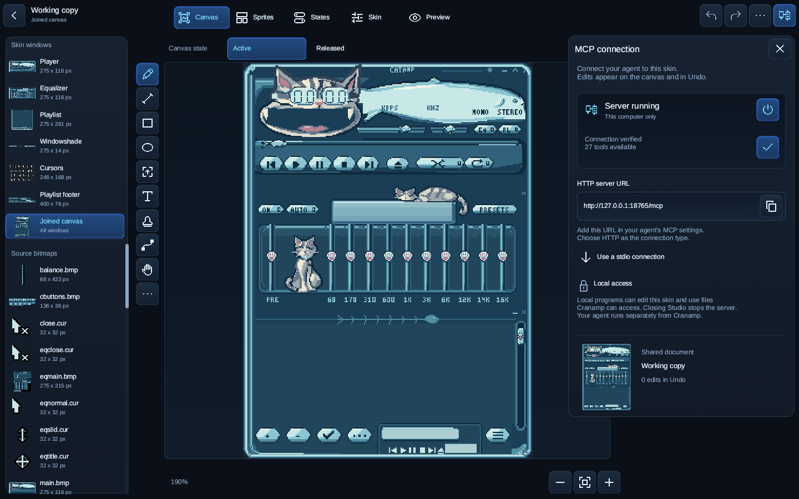
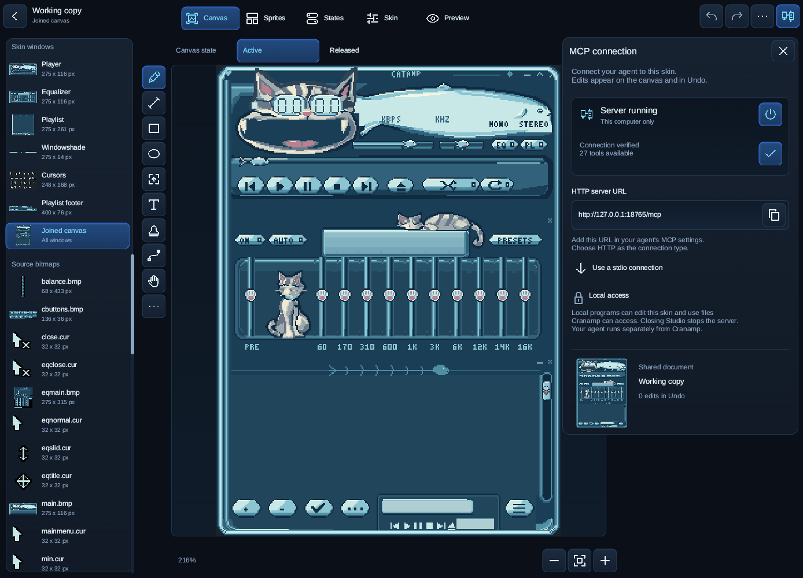

Desktop MCP connection
Unreleased UI. These images show the running native app. MCP is available on desktop and starts off. Mobile and web builds exclude it.
Store descriptions and capture details.
macOS

Connect an MCP agent to the same canvas and undo history.
Windows

Connect an MCP agent to the same canvas and undo history.